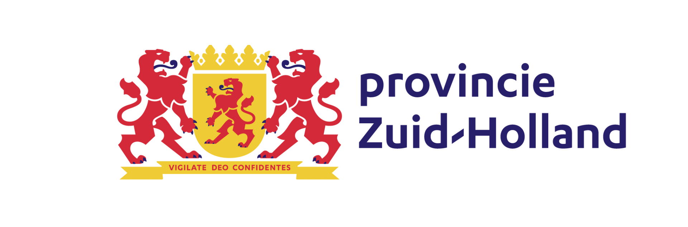

01 · Plant level
Closer to the crop.
Life⁻s complements the systems that manage the greenhouse environment by working at plant level through a protected, proprietary approach.
A new interface between plants and technology
Life⁻s works closer to the plant to help growers unlock more value from the resources already used in the greenhouse—automatically and without another complex workflow.
Technology
Greenhouses precisely manage light, water, nutrition, and climate. Life⁻s adds a proprietary plant-level layer designed to support crop performance without disrupting existing operations.
01 · Plant level
Life⁻s complements the systems that manage the greenhouse environment by working at plant level through a protected, proprietary approach.
02 · Automatic
Once installed, the system operates automatically. No dashboard, constant interpretation, or additional daily grower task is required.
03 · Measurable
Performance is evaluated against controls and translated into a practical business case before commercial expansion.
Protected by design: we explain the value, operating experience, and validated outcomes while keeping the proprietary mechanism confidential.
For Growers
The objective is straightforward: create measurable crop value without adding inputs, technical burden, or a difficult adoption process.
Designed to operate automatically alongside normal greenhouse routines.
Designed to support performance without continuously increasing water, nutrition, energy, or labour.
Each crop is evaluated against agreed performance and commercial criteria.
Commercial rollout follows demonstrated value rather than promises alone.
Prove the uplift. Quantify the value. Expand with confidence.
Independent Validation
The trial was designed, controlled, and measured by HAS Green Academy. Every figure below compares treated plants with an untreated control under identical conditions.
Controlled-trial outcomes are crop- and condition-specific. Commercial greenhouse pilots are used to assess repeatability, operational fit, and grower economics.
Pilots & Partners
Life⁻s works with growers, horticultural specialists, and research partners to test repeatability, operational fit, and commercial value in real production environments.
Does Life⁻s improve crop yields?
Can the results be repeated across crop cycles and growing environments?
Is the system simple to install and operate in the greenhouse?
Does it create a clear business case for the grower?
Transparent on results. Deliberately private on mechanism.
Partners receive the operational information needed to run and evaluate a pilot safely. The proprietary system itself remains protected.
Supported Innovation
Life⁻s is supported through the WBSO and an awarded MIT Feasibility Project.
The MIT Feasibility Project is financially supported by the Province of South Holland.

Our Story
On his family farm, co-founder Arda saw how hard growers could work while still being left with a low profit margin.
Increasing production often meant spending more on inputs, labour, or equipment. The available technologies could introduce additional cost and complexity before proving their value.
“Could we create a device that increases grower profit, remains easy to use, and works without demanding the grower’s attention?”
Arda’s background in farming and electronics engineering gave him a way to approach the problem from both sides. The technology had to create measurable crop value, but it also had to respect the grower’s reality.
It should operate automatically in the background—without another dashboard, complicated workflow, or daily interaction.
Meet the Team
Chief Executive Officer
Electronics engineer with direct farming experience and a clear understanding of grower economics, crop production, adoption barriers, and daily farm reality.
Arda leads the company vision, product strategy, fundraising, and the connection between the technology and grower value.
Chief Technology Officer
Electronics engineer focused on agritech systems, hardware development, product reliability, and turning technical ideas into dependable products.
Ali leads the development of the Life⁻s platform and its move from research into greenhouse use.
Chief Commercial Officer
Commercial leader with experience in go-to-market strategy, customer development, sales, partnerships, and revenue growth.
Douglas leads commercial strategy, fundraising, and engagement with growers and partners to build a strong business around Life⁻s.
Our Belief
Before there is food on a table, oxygen in the air, or shelter for countless forms of life, there is a plant.
Plants quietly sustain the world. They turn light into growth, carry life through seasons, and support nearly every living system on Earth.
Yet we still understand them mostly from the outside.
Life⁻s was created to change that.
We believe a plant is not simply something to manage. It is a living system that senses, responds, adapts, and communicates in ways we are only beginning to understand.
By bringing technology closer to the plant itself, Life⁻s aims to create a new relationship between growers and crops—one built on deeper understanding, better timing, and greater respect for life.
Our ambition goes beyond helping greenhouses grow more.
We want to help agriculture become more intelligent, more resilient, and more connected to the living systems it depends on.
Plants are the foundation of life on Earth. They feed us, produce the oxygen we breathe, support ecosystems, and make human life possible.
That is why Life stays at the center of our name.
Life⁻s has a double meaning. It can be read as “Life is” — a statement about the essential role of plants in sustaining life. It also represents the many forms of life connected through plants: growers, people, animals, ecosystems, and future generations.
The e⁻ symbol represents the electron: the negatively charged particle whose movement and behavior make electronic systems work. This connects directly to our technology and our engineering foundation.
Just as electronic engineering is built on controlling electrons and electrical signals, Life⁻s applies this principle to plants. We sense and support the plant’s internal electrical signals to better understand growth, stress, and resource use.
Our slogan, “for all,” reflects our belief that we stand not only for growers, but also for people and the planet. Our technology helps growers produce more efficiently, but our mission goes beyond the greenhouse.
By supporting plant life, Life⁻s aims to help protect life on Earth — for growers, for people, for the planet, and for all.
Our purpose
Because every life begins with another life.
Contact
For pilot, partnership, investment, or commercial inquiries, send us a short message.
We will direct your inquiry to the right member of the Life⁻s team.